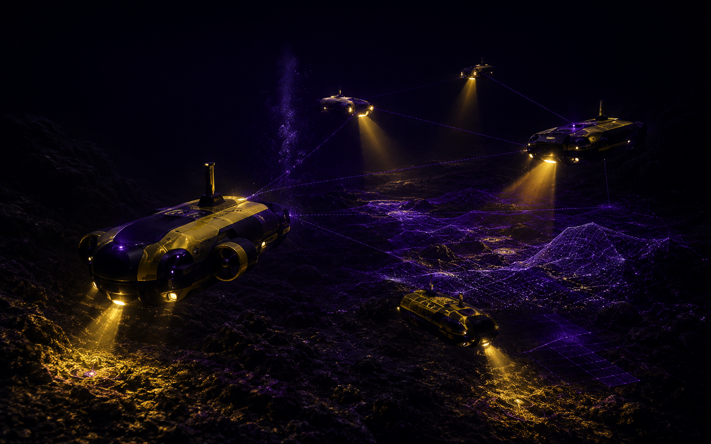
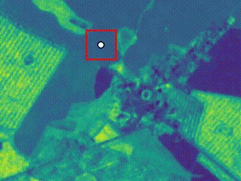
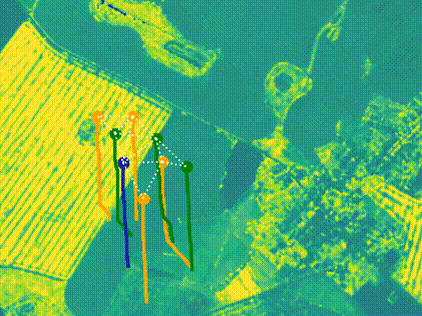
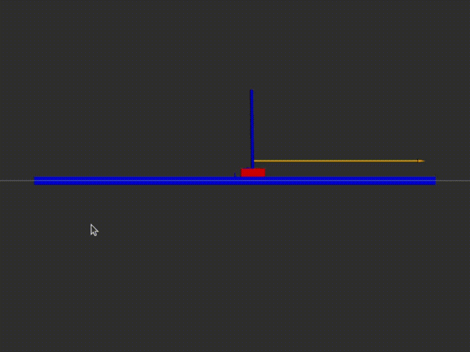
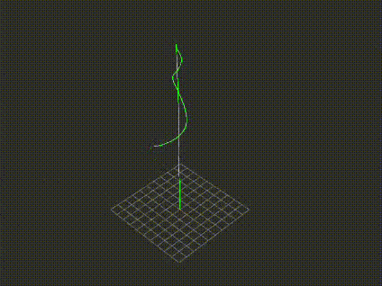

Coordinated robotic swarms for seabed mapping, environmental sensing, and distributed ocean surveys.
CURRENT MISSION
Commanding Swarms Beneath the Abyss.
ACTIVE TRACK
ALGORITHM-FIRST
Peacock Dynamics develops simulation-tested algorithms for coordinated marine robot swarms. The present focus is coverage, guidance, perception, and decision-making under limited communication, where multiple low-cost vehicles can explore wider areas more resiliently than a single platform.
The same algorithmic stack is being shaped toward seabed mapping, distributed environmental sensing, resource prospecting, and long-duration multi-vehicle exploration. By coordinating motion, local perception, task allocation, and communication-aware behavior in simulation first, Peacock Dynamics is building the control logic needed for future marine systems operating beyond continuous human oversight.

Algorithms for coverage, guidance, perception, task allocation, and coordination under limited communication.
Develop and evaluate the autonomy stack in controlled simulations before progressing toward marine robotic integration.
TECHNICAL LINEAGE
From prior experiments to marine autonomy
10 PRIOR WORKS · 05 CAPABILITY LAYERS
Developed across aerial, terrestrial, planetary, and simulation-based robotics, these projects established core methods in control, perception, mapping, guidance, and multi-agent coordination. Their underlying architectures now form the technical foundation for Peacock Dynamics’ marine autonomy direction.

CAPABILITY LAYER 01
Simulation and Local Navigation.
MicroUAV-2D established a lightweight, CPU-only sandbox for local visual observations and discrete XY motion. AgriDroneRL extended this foundation with PPO-based, first-visit coverage over a vegetation utility field. Together, they provide the simulation and local-navigation primitive now being adapted toward marine survey and seabed-coverage algorithms.

CAPABILITY LAYER 02
Swarm Coordination and Coverage.
PPO-Driven Swarm Control combined learned local motion with repulsion, directional graph consensus, and stochastic roles, eliminating 138 close encounters while preserving coordinated coverage. The Boustrophedon Navigator added a deterministic survey primitive with complete lane coverage and 0.0518 average cross-track error. Together, these methods inform structured, communication-aware coverage for future marine robot swarms.

CAPABILITY LAYER 03
Stability, Guidance, and Optimal Control.
InterceptDynamics-Py compared classical PD guidance with constrained MPC using relative-state dynamics, acceleration limits, and slew-rate bounds. Cart-Pole LQR demonstrated state-space stabilization under continuous stochastic disturbance. These control primitives transfer naturally to trajectory regulation, target-relative navigation, and disturbance-aware guidance for future marine vehicles.

CAPABILITY LAYER 04
Sensor Interpretation and Semantic Mapping.
Reflect-Aug-Seg studied range-aware signal augmentation for LiDAR, showing measurable semantic improvement from lightweight reflectivity proxies. VLMaps added persistent semantic spatial memory through visual-language embeddings and open-vocabulary map queries. Originally developed for ground and indoor settings, these methods now inform how Peacock Dynamics approaches marine perception, environmental mapping, and meaning-aware autonomy under uncertain sensing.

CAPABILITY LAYER 05
3D Reconstruction and Robotics Translation.
ApolloSplat-Py reconstructed a lunar terrain patch from 15 historical images, producing a 580,552-point cloud and ROS2-ready mesh assets. TerraDrop-PX4 connected perception to simulated deployment through ROS2, Gazebo, PX4 offboard control, camera geometry, and visual servoing. Together, these projects establish a pipeline from environment reconstruction to closed-loop robotic interaction, now informing marine terrain modeling and autonomy integration.
TEAM
The Founding Team
CHALLENGES WE ARE TACKLING
Engineering autonomy for difficult marine environments
-
01
Mission-aware swarm coordination
Marine robotic teams must coordinate across mapping, monitoring, inspection, and distributed search tasks while avoiding redundant motion and preserving mission coverage.
-
02
Autonomy under uncertain dynamics
Currents, drag, sensing noise, localization drift, and changing environmental conditions make marine motion difficult to model and control. Robust algorithms must remain useful when the model is incomplete.
-
03
Communication-constrained cooperation
Underwater communication is limited, delayed, and intermittent. Swarm behavior must therefore rely on decentralized decision-making rather than continuous centralized supervision.
-
04
From simulation to deployable systems
Algorithms must eventually translate across simulation, robotic middleware, onboard computation, sensing, propulsion, and controlled field testing without losing stability, safety, or interpretability.